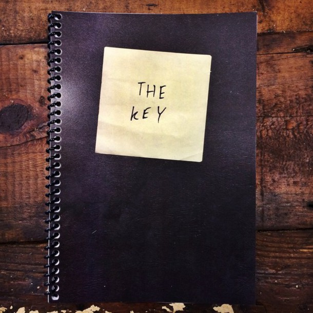

A lot of people are afraid of the dark. According to the internet, nyctophobia is among the most common phobias cited by adults and children. I’m not afraid of the dark, in general. But since I was very young, the fear of dark rooms has plagued my every waking moment. As a child, I slept with all of the lights on, terrified of the shadows that accumulated in the corners, out of reach of the meager glow of my nightlight.
Genki crouched in the alley, hand on the hilt of the knife. He hear the laughter of the men two floors above accompanied by the polite titter from the prostitutes as they pretended to find the boorishness of the drunks amusing. He was nervous and the wait behind the empty night soil bin did little to assuage his anxiety over what he was there to do ...
The night was red. It was all the traveler could think of as he walked the narrow cobblestone streets towards the plaza and the music. He turned the thought over and over, trying to get it to make sense, hoping to find the hidden seam or latch somewhere along an edge, anything that would reveal the meaning of the bizarre and persistent thought ...
The man was fat, piggy blue eyes squinting out from behind steel rimmed glasses that were nearly a part of his sallow and greasy face. He wore an obnoxious Hawaiian shirt, khaki shorts and sandals. Hairless legs that were so crisscrossed with varicose veins that they made his pallid calves look like they were carved from bleu cheese. Many of the boatman’s fares looked like this man ...
The house was a ramshackle Cape Cod, set back from the forgotten cul-de-sac in a neighborhood that had long ago fallen out of fashion. A handful of the houses remained occupied by their stubborn and elderly residents, who clung, limpet like, to their dilapidated and crumbling homes. The neighborhood was mostly populated by a small group of homeless men and women ...
I was just a boy the first time I heard the tales of the tomb city. Mama had taken me to the bazaar and I wandered among the smells of roasting meat, fresh spices and sweat, entranced by the sights and sounds of people from all over the world. Blonde haired, blue eyed men from the North, their faces scorched a deep and angry red by the merciless desert sun ...
The little house had been built sometime in the mid 1940’s and sat on a tiny lot on the shady side of Silver Street. The neighborhood had changed over the years, the homes once belonging to single families were bought up and divided into apartments usually rented by students and semi-ambitious twenty-somethings who wanted a relatively safe taste of city life ...
The sun shone. The heads of the tall grass dozed lazily in the afternoon light, occasionally nodding as a gentle breeze crept across the high plain. The sea of gold seemed to extend in all directions towards the horizon, and Jeremy knew nothing else. For as long as he could remember, the sea of tall grass had stretched into forever, only abated by the edges of the small clearing where the scarred ...
He could feel the wooden planks below his feet. Could hear the priest shouting over the assembled crowd “Lord Jesus Christ!” His ears were ringing as he stumbled off the sidewalk and into the street, narrowly avoiding a taxi in the right hand lane. Sprinting past a woman yammering! Went the doorbell ...
My Uncle Joe was what a lot of old folks would call a “character.” When I asked Gramma what that meant, she told me that a character was somebody who was usually more trouble than he was worth, and you couldn’t believe a word that came galloping out of his mouth. I wasn’t sure how much I agreed with Gramma, but even as a young boy I had the sense not to say so ...
Brian stood a little ways down the path, hand on his hip. “I think we’re about three or four miles from the campsite.” Harry wiped sweat from his forehead and checked his watch. “Well fuck. It’s already 4:30 ...
The woman disappeared behind the dressing room door and left him alone with his thoughts. Adam Emanuel Evans sank back in the chair, hoping to catch a few precious moments of rest before the girl returned to warn him there were only five minutes until the curtain. He had always hated the reminders, even as a struggling actor ...
When I was a kid, my Uncle Joe used to tell me stories of when he was a traveling salesman for the Sears Roebuck company in the forties. Now Uncle Joe always had a reputation of being a bit reckless, so I was always ready to hear one of his tales. One day, when I was about six or so, he catches me on the porch and says ...
James awoke one morning to find that he could turn himself into a chair. Being a practical man with very little imagination, James did not spend much time questioning his newly discovered talent. At first, he sat quietly in the blandly in the early morning light of the bland apartment, a basic wooden chair with six vertical wooden slats. Curious, he thought ...